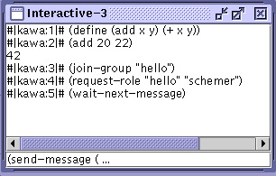

Figure 3. Parenthesis lovers, unite ! The Scheme agent

This example demonstrates the bindings between MadKit and the Kawa Scheme implementation.
The agent presents a panel GUI with a line to enter Scheme expression and an area which shows evaluations of these expressions. You can enter any R4RS Scheme expressions, and use the bindings to the MadKit agent class. Most of the methods of the Agent class have been translated to Scheme methods, so you can join groups, request roles, send and receive messages from a Scheme program.
Details of the Scheme library are described in the MadKit Development Guide, section 5.2
The agent code in itself is not really interesting, it basically setup an input/output panel and hook it to the Kawa interpreter.
You can also write directly your Scheme agents in a text file, and have the G-Box launch them directly without interactive input through the Launch Scheme Agent... item in the File menu.
More information about the Kawa Scheme interpreter can be found on its official web site http://www.gnu.org/software/kawa/